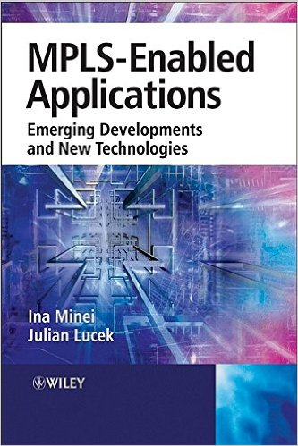

MPLS holds the key to network convergence. “Here at last is a single, all-encompassing resource where the myriad applications sharpen into a comprehensible text.” – Kireeti Kompella, Juniper Fellow, Juniper Networks. “This should be the textbook for MPLS courses, both for training of experienced networking professionals and for universities.” – Loa Andersson, Acreo AB, IAB-member and IETF MPLS working group co-chair. “”MPLS-Enabled Applications” is a must-read for anyone involved in enterprise or service-provider networks.” – Dave Cooper, Sr. Manager IP Engineering, Global Crossing, Ltd.The capability of Multiprotocol Label Switching (MPLS) to identify traffic based on its label at forwarding time, coupled with its ability to force traffic down pre-established paths, has created a whole range of new applications while enabling scaling of existing applications. To highlight the emerging developments, Ina Minei and Julian Lucek cover traffic engineering, L3VPNs (Layer 3 Virtual Private Networks), pseudowires, VPLS (Virtual Private LAN Service), and much more. They methodically illustrate how MPLS holds the key to network convergence by allowing operators to offer more services over a single physical infrastructure and how it can reduce the cost of the network by streamlining operations. With over a hundred illustrations and thirteen in-depth chapters MPLS-Enabled Applications documents why MPLS is now considered the networking technology for carrying all types of network traffic, including voice telephony, real-time video, and the many types of data traffic.” MPLS-Enabled Applications”: provides an authoritative, comprehensive overview of the current status and future potential of MPLS applications, including the latest IETF drafts; examines all the major applications, including L3VPN, L2VPN, VPLS and pseudowires; explains how to apply MPLS and tailor it to fit specific scenarios; examines the scaling requirements of equipment at different points in the network under different deployment scenarios; offers inclusive coverage of point-to-multipoint label switched paths, DiffServ-aware traffic engineering and QoS, inter-domain traffic engineering and path computation elements, route target filtering, and the latest developments in multicast support for L3VPNs; and covers the management and troubleshooting of MPLS networks and associated services, to enable high availability.”MPLS-Enabled Applications” will provide those involved in the design and deployment of MPLS systems, as well as those researching the area of MPLS networks, with a thoroughly modern view of how MPLS is transforming the networking world.
